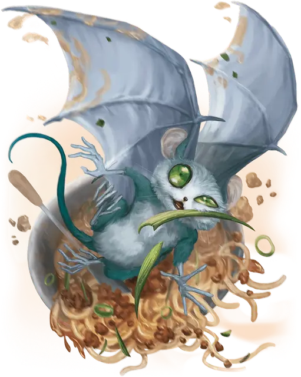

Винлинг
Wynling
Крошечная Фея, обычно хаотично-нейтральная

Класс Доспеха 15
Хиты 21 (6к4 + 6)
Скорость 30 футов, летая 40 футов
| мод | спас | ||
|---|---|---|---|
| СИЛ | 3 | −4 | −4 |
| ЛОВ | 20 | +5 | +5 |
| ТЕЛ | 13 | +1 | +1 |
| мод | спас | ||
|---|---|---|---|
| ИНТ | 10 | +0 | +0 |
| МДР | 14 | +2 | +2 |
| ХАР | 16 | +3 | +3 |
Навыки Ловкость рук +7, Скрытность +7
Чувства тёмное зрение 60 футов, пассивное Восприятие 12
Языки Сильван
Опасность 1/2 (100 опыта)
Бонус мастерства +2
Действия
Удар. . Рукопашная атака оружием: +7 к попаданию, досягаемость 5 футов, одна цель. Попадание: 7 (1к4 + 5) дробящего урона.
Горный покров (Перезарядка 4-6). Винлинг волшебным образом становится невидимым вместе с любым снаряжением, которое он носит или несёт, на 1 минуту или до тех пор, пока не совершит бросок атаки.
Реакции
Бегство трикстера. Сразу же после того, как существо, которое видит винлинг, промахивается по винлингу броском атаки, винлинг может переместиться на расстояние до 30 футов. Это перемещение не провоцирует атак.
Описание
Игривые и озорные, винлинги защищают горные вершины и высокогорные долины от нарушителей. Винлинг редко сталкивается с угрозой напрямую, предпочитая отпугивать злоумышленников, беспокоя их кражами и проказами. Многие путешественники возвращаются из земель, охраняемых винлингами, с историями об исчезающем снаряжении и любопытных глазах, смотрящих из тени.
Винлинги обычно живут в горах, которые они защищают, но они часто забредают в близлежащие поселения, привлеченные зажигательной музыкой и сладкой едой. Вдали от своих открытых, диких жилищ винлинги становятся причиной всевозможных таинственных несчастных случаев.